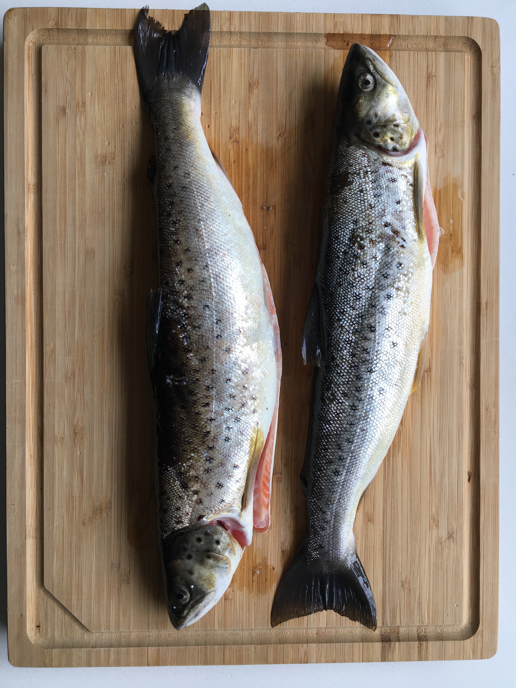

Hvad må man
Der er visse regler når man er på undervandsjagt. De regler der er, er stort set det samme som for en lystfisker. Man skal have fisketegn, (fås på Fisketegn.dk) overholde fredningsbælter og zoner, fredningstider og mindstemål.
Den eneste regl der skiller sig ud i forhold til en almindelig lystfisker er at man som UV jæger kun må jage i saltvand.
Du kan vælge at fryse den (holder nok 1-2 måneder ved -18 grader Den kan også opbevares i køleskab 2-5 grader i 3-4 dage Man kan også vælge at ryge den og derved forlænge holdbarheden til 7-8 dage i køleskab.
